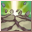
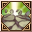
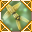
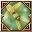
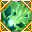
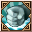

Loading...
Items
Armas
Espada
Maza
Hacha
Espada dos manos
Maza dos manos
Hacha dos manos
Arco
Arma de Fuego
Reliquia
Bastón
Escudo
Arma mec. 1 mano
Arma mec. 2 manos
Cañon Pesado
Flechas
Balas de cañon
Llave de Cristal
Katana
Armadura
Cabeza
Cuerpo
Piernas
Manos
Piernas
Dorso
Accesorio
Mochila
Equipo Especial
Equipo 1 mano
Equipo 2 manos
Equipo Cabeza
Equipo Espalda
Cuerpo
Articulos de Talento
Talentos
Planos
Fragmentos
Skills
Piedras Mega
Sprite
Sprite
Monstruo Embotellado
Mochila
Formula Isla Sprite
Cria Isla Sprite
Receta Isla Sprite
Edificio Isla Sprite
Legados
Muebles Sprite
Emblema Sprite
Skill Book(Novice)
Skill Book(Intermediate)
Skill Book(Advanced)
Materiales
Mineria
Forraje
Caza
Materiales de equipo
Piedras de Equipo
Gema Prismatica
Piedra Runa
Piedra de Resonancia
Nucleos
Monturas
Tronos
Comb Talentos
Berserker
Paladin
Ranger
Asesino
Clerigo
Sabio
Mago
Nigromante
Artificiero
Artillero
Duelista
Relojero
Quest
Titulos
Skills
Berserker
Paladin
Ranger
Asesino
Clerigo
Sabio
Mago
Nigromante
Artificiero
Artillero
Duelista
Relojero
Sprites
Spanish
English
Español
Portuguese
French
Sugerencias
Contáctenos
Creditos
Haz Alquimia
F.A.Q
Hora
00
:
00
:
00
Horario Emisarios
<Avatar del Emisario> Heraldo de la Lujuria
Bosque Antiguo (X:290, Y:370) Lunes 20:35
<Emisario del Juicio Final Lunático> Locura de Lujuria
Valle de Caballeros (X:510.53, Y:619.852) Lunes 20:35
<Emisario Pesadilla> Voraz Ladona
Club de Lucha del Rey Sprite (X:134.088, Y:347.754) Lunes 15:30
<Emisario Antiguo> Justicia
Valle del Espíritu (X:439.138, Y:559.115) Lunes 20:30
<Emisario de Ilusión> Yen Alfa
Aldea Aura Ficticia (X:639.151, Y:232.943) Lunes 15:30
<Emisario de Ilusión> Zhong Iota
Sendero Llamafría (X:534.548, Y:578.733) Lunes 20:30
Skills Sage
Skills
Skills Pasivos
Nombre
Nivel
Efecto
Juicio Fulgurante 1
Skills
×
Juicio Fulgurante 1
Juicio Fulgurante 2
Juicio Fulgurante 3
Juicio Fulgurante 4
Juicio Fulgurante 5
Juicio Fulgurante 6
Sentencia Brillante Mejorada 1
Sentencia Brillante Mejorada 2
Juicio Sagrado 1
Juicio Sagrado 2
6
Info
Oración Curativa 1
Skills
×
Oración Curativa 1
Oración Curativa 2
Oración Curativa 3
Oración Curativa 4
Oración Curativa 5
Oración Curativa 6
6
Info
Destello Glorioso 1
Skills
×
Destello Glorioso 1
Destello Glorioso 2
Destello Glorioso 3
Destello Glorioso 4
Destello Glorioso 5
Destello Glorioso 6
Impacto de Espíritu Sacro 1
Impacto de Espíritu Sacro 2
Golpe Espíritu Santo 1
Golpe Espíritu Santo 2
6
Info
Guardia Ligero 1
Skills
×
Guardia Ligero 1
Guardia Ligero 2
Guardia Ligero 3
Guardia Ligero 3
Guardia Ligero 4
Guardia Ligero 4
Guardia Ligero 5
Guardia Ligero 5
Guardia Ligero 6
Guardia Ligero 6
6
Info
Oración de Resurrección 1
Skills
×
Oración de Resurrección 1
Oración de Resurrección 2
Oración de Resurrección 3
8
Info
Limpia Veneno 1
Skills
×
Limpia Veneno 1
Limpia Veneno 2
Limpia Veneno 3
Limpia Veneno 4
Limpia Veneno 5
Limpia Veneno 6
Limpia Veneno 7
10
Info
Purificador de Cuerpo 1
Skills
×
Purificador de Cuerpo 1
Purificador de Cuerpo 2
Purificador de Cuerpo 3
Purificador de Cuerpo 4
Purificador de Cuerpo 5
Purificador de Cuerpo 6
Purificador de Cuerpo 7
10
Info
Mata Maldiciones 1
Skills
×
Mata Maldiciones 1
Mata Maldiciones 2
Mata Maldiciones 3
Mata Maldiciones 4
Mata Maldiciones 5
Mata Maldiciones 6
Mata Maldiciones
10
Info
Palabra Defensora 1
Skills
×
Palabra Defensora 1
Verdad de Vigilancia 2
Verdad de Vigilancia 3
16
Info
Bendición de Restauración 1
Skills
×
Bendición de Restauración 1
Bendición de Restauración 2
Bendición de Restauración 3
Bendición de Restauración 4
16
Info
Golpe Polvoriento 1
Skills
×
Golpe Polvoriento 1
Golpe Polvoriento 2
Golpe Polvoriento 3
Golpe Polvoriento 4
31
Info
Serenata de Cuchilla Filosa 1
Skills
×
Serenata de Cuchilla Filosa 1
Serenata de Cuchilla Filosa 2
Serenata de Cuchilla Filosa 3
Serenata de Cuchilla Filosa 4
Serenata de Cuchilla Filosa 5
Serenata de Cuchilla Filosa 6
Serenata de Cuchilla Filosa 7
Serenata de Cuchilla Filosa 8
Serenata de Cuchilla Filosa 9
Serenata Cuchilla Veloz 1
Serenata Cuchilla Veloz 2
Serenata Cuchilla Veloz 3
Serenata Cuchilla Veloz 4
Serenata Cuchilla Veloz 5
Cuchilla Veloz Fuerte 1
Cuchilla Veloz Fuerte 2
Cuchilla Veloz Fuerte 3
Cuchilla Veloz Fuerte 4
31
Info

Ira de la Naturaleza 1
Skills
×
Ira de la Naturaleza 1
Ira de la Naturaleza 2
Ira de la Naturaleza 3
Ira de la Naturaleza 4
Ira de la Naturaleza 5
Ira de la Naturaleza 6
Ira de la Naturaleza 7
Ira de la Naturaleza 8
Furia de la Tierra 9
Aullido Feroz del Mundo 1
Aullido Feroz del Mundo 2
Aullido Feroz del Mundo 3
Aullido Feroz del Mundo 4
Furia de Gaia 5
Desgarrar Tierra 1
Desgarrar Tierra 2

Desgarrar Tierra 3
Desgarrar Tierra 4
31
Info
Forma del Gran Águila 1
Skills
×
Forma del Gran Águila 1
Forma del Gran Águila 2
Forma del Gran Águila 3
Forma del Gran Águila 4
Forma del Gran Águila 5
Forma de Gran Águila 6
Forma de Falcón 1
Forma de Halcón 2
31
Info
Hoja en el Viento 1
Skills
×
Hoja en el Viento 1
Hoja en el Viento 2
Hoja en el Viento 3
Hoja en el Viento 4
Gran Hoja en el Viento 1
Gran Hoja en el Viento 2
Gran Hoja en el Viento 3
31
Info
Dardo de Pluma 1
Skills
×
Dardo de Pluma 1
Dardo de Pluma 2
Dardo de Pluma 3
Dardo de Pluma 4
Dardo de Pluma 5
Dardo de Pluma 6
Dardo de Pluma 7
Dardo de Pluma 8
Dardo de Pluma 9
Dardo Alas Múltiples 1
Dardo Alas Múltiples 2
Dardo Alas Múltiples 3
Dardo Alas Múltiples 4
Dardo Alas Múltiples 5
Flecha Múltiple Afilada 1
Flecha Múltiple Afilada 2
Flecha Múltiple Afilada 3
Flecha Múltiple Afilada 4
31
Info
Dardo Ala de Roc 1
Skills
×
Dardo Ala de Roc 1
Dardo Ala de Roc 2
Dardo Ala de Roc 3
Dardo Ala de Roc 4
Dardo Ala de Roc 5
Dardo Ala de Roc 6
Dardo Pluma Temblorosa 1
Dardo Pluma Temblorosa 2
Palabra Defensora 3
Flecha Confinada 1
Flecha Confinada 2
31
Info
Bajo el Control de la Tierra
Skills
×
Bajo el Control de la Tierra
32
Info
Aliento de la Naturaleza 1
Skills
×
Aliento de la Naturaleza 1
Aliento de la Naturaleza 2
Aliento de la Naturaleza 3
Aliento de la Naturaleza 4
Aliento de la Naturaleza 5
Aliento de la Naturaleza 6
Aliento de la Naturaleza 7
Aliento de la Naturaleza 8
Aliento de la Naturaleza 9
Sanación Natural 1
Sanación Natural 2
Sanación Natural 3
Bendición Natural 1
Bendición Natural 2
Bendición Natural 3
32
Info
Espíritu Curativo 1
Skills
×
Espíritu Curativo 1
Espíritu Curativo 2
Espíritu Curativo 3
Espíritu Curativo 4
Espíritu Curativo 5
Espíritu Curativo 6
Espíritu Curativo 7
Espíritu Curativo 8
Espíritu Curativo 9
Gran Espíritu Curativo 1
Gran Espíritu Curativo 2
Gran Espíritu Curativo 3
Toque de Vitalidad 1
Toque de Vitalidad 2
Toque de Vitalidad 3
32
Info
Danza de Títeres 1
Skills
×
Danza de Títeres 1
Danza de Títeres 2
Danza de Títeres 3
Danza de Títeres 4

Danza de Títeres 1
Danza de Títeres 2

Danza de Títeres 3
32
Info
Vientos Tropicales 1
Skills
×
Vientos Tropicales 1
Vientos Tropicales 2
Vientos Tropicales 3
Vientos Tropicales 4
Vientos Tropicales 5
Vientos Tropicales 6
Vientos Tropicales 7
Vientos Tropicales 8
Vientos Tropicales Reforzados 1
Vientos Tropicales Reforzados 2
Vientos del Trópico Reforzados 3
Protección Espíritu de Águila 1
Protección Espíritu de Águila 2
32
Info
Manantial de Maná 1
Skills
×
Manantial de Maná 1
Manantial de Maná 2
Manantial de Maná 3
Manantial de Maná 4
Manantial de Maná 5
Manantial Sacro de Maná 1
Manantial Sacro de Maná 2
Manantiales Eternos de Maná 3
Manantial Sacro de Maná 4
Manantial Sacro de Maná 5
32
Info
Forma del Lobo Sombra 1
Skills
×
Forma del Lobo Sombra 1
Forma del Lobo Sombra 2
Forma del Lobo Sombra 3
Forma del Lobo Sombra 4
Forma de Sombra de LoboRabioso 1
Forma de Lobo Rabioso Sombrío 2
34
Info
Colmillos Desgarradores 1
Skills
×
Colmillos Desgarradores 1
Colmillos Desgarradores 2
Colmillos Desgarradores 3
Colmillos Desgarradores 4
Colmillos Desgarradores 5
Colmillos Desgarradores 6
Colmillos Desgarradores 7
Colmillos Desgarradores 8
Preocupación Demente 1
Preocupación Demente 2
Preocupación Demente 3
Preocupación Demente 4
Preocupación Alocada 5
Lágrima Salvaje 1
Lágrima Salvaje 2
Lágrima Salvaje 3
Lágrima Salvaje 4
34
Info
Golpe de Gracia 1
Skills
×
Golpe de Gracia 1
Golpe de Gracia 2
Golpe de Gracia 3
Golpe de Gracia 4
Golpe de Gracia 5
Golpe de Gracia 6
Golpe de Gracia 7
Golpe de Gracia 8
Golpe Letal 1
Golpe Letal 2
Golpe Letal 3
Golpe Letal 4
Golpe Letal 5
Súper Golpe Letal 1
Súper Golpe Letal 2
Súper Golpe Letal 3
Súper Golpe Letal 4
34
Info
Bendición Rosa 1
Skills
×
Bendición Rosa 1
Bendición Rosa 2
Bendición Rosa 3
Bendición Rosa 4
Bendición Rosa 5
Bendición Rosa Cristalina 1
Bendición Rosa Cristalina 2
Bendición de la Rosa de Cristal 3
Espinas de Cristal 1
Espinas de Cristal 2
36
Info
Depredador Silencioso 1
Skills
×
Depredador Silencioso 1
Depredador Silencioso 2
Depredador Silencioso 3
Gran Sigilo 1
Gran Sigilo 2
36
Info
Emboscada Veloz 1
Skills
×
Emboscada Veloz 1
Emboscada Veloz 2
Emboscada Veloz 3
Emboscada Veloz 4
Emboscada Veloz 5
Emboscada Veloz 6
Emboscada Veloz 7
Emboscada Veloz 8
Ataque Veloz 1
Ataque Veloz 2
Ataque Veloz 3
Ataque Veloz 4
Ataque Veloz 5
Asalto de LoboRabioso 1
Asalto de Lobo Rabioso 2
Asalto de Lobo Rabioso 3
Asalto de Lobo Rabioso 4
36
Info
Choque Mental 1
Skills
×
Choque Mental 1
Choque Mental 2
Choque Mental 3
Choque Mental 4
Choque Mental 5
Choque Mental 6
Choque Mental 7

Impacto Mental 1
Impacto Mental 2
Impacto Mental 3
Impacto Mental 4
Impacto Mental 5
Golpe de Gorila 1
Golpe de Gorila 2
Golpe de Gorila 3
Golpe de Gorila 4
38
Info
Torbellino de Arena 1
Skills
×
Torbellino de Arena 1
Torbellino de Arena 2
Torbellino de Arena 3
Torbellino de Arena 4
Torbellino de Arena 5
Torbellino de Arena 6
Torbellino de Arena 7
Tormenta de Arena 1
Tormenta de Arena 2
Tormenta de Arena 3
Tormenta de Arena 4
Tormenta del Desierto 5
Tornado de Arena 1
Tornado de Arena 2
Tornado de Arena 3
Tornado de Arena 4
38
Info
Forma del Simio Gigante 1
Skills
×
Forma del Simio Gigante 1
Forma del Simio Gigante 2
Forma del Simio Gigante 3
Forma del Simio Gigante 4
Forma del Simio Gigante 5
Forma de Gorila Salvaje 1
Forma de Gorila Salvaje 2
38
Info
Ira del Simio Gigante 1
Skills
×
Ira del Simio Gigante 1
Ira del Simio Gigante 2
Ira del Simio Gigante 3
Ira del Simio Gigante 4
Ira del Simio Gigante 5
Furia del Simio Gigante 1
Furia del Simio Gigante 2
Furia del Gran Simio Gigante 3
Furia del Simio Gigante 4
Furia del Simio Gigante 5
38
Info
Grito de Guerra 1
Skills
×
Grito de Guerra 1
Grito de Guerra 2
Grito de Guerra 3
Grito de Guerra 4
Grito de Guerra Mejorado 1
Grito de Guerra Mejorado 2
Rugido de Gorila Gigante 1
Rugido de Gorila Gigante 2
38
Info
Riqueza de la Naturaleza 1
Skills
×
Riqueza de la Naturaleza 1
Riqueza de la Naturaleza 2
Riqueza de la Naturaleza 3
Riqueza de la Naturaleza 4
Riqueza de la Naturaleza 5
Riqueza de la Naturaleza Mejorada 1
Riqueza de la Naturaleza Mejorada 2
Gracia de Naturaleza 1
Gracia de Naturaleza 2
40
Info
Ola Poderosa 1
Skills
×
Ola Poderosa 1
Ola Poderosa 2
Ola Poderosa 3
Ola Poderosa 4
Ola Poderosa 5
Ola Poderosa 6
Ola Poderosa 7
Ola Potente Sombría 1
Ola Potente Sombría 2
Ola Potente Sombría 3
Ola Potente Sombría 4
Ola Potente Sombría 5
Ola Potente Sombría 6
40
Info
Furia de Batalla 1
Skills
×
Furia de Batalla 1
Furia de Batalla 2
Furia de Batalla 3
Animo Asesino 4
Animo Asesino 2
Instintos Salvajes 1
Instintos Salvajes 2
40
Info
Bendición de la Naturaleza 1
Skills
×
Bendición de la Naturaleza 1
Bendición de la Naturaleza 2
Bendición de la Naturaleza 3
Bendición de la Naturaleza 4
Bendición de la Naturaleza 5
Protección del Espíritu del Lobo 1
Protección del Espíritu del Lobo 2
Protección del Espíritu de Lobo Salvaje 1
Protección del Espíritu de Lobo Salvaje 2
40
Info
Puño Enfurecido de la Selva 1
Skills
×
Puño Enfurecido de la Selva 1
Puño Enfurecido de la Selva 2
Puño Enfurecido de la Selva 3
Puño Enfurecido de la Selva 4
Puño de Jungla 5
Puñetazo de Jungla 1
Puñetazo de Jungla 2
61
Info
Aguja Pluma de Ala 1
Skills
×
Aguja Pluma de Ala 1
Aguja Pluma de Ala 2
Aguja Pluma de Ala 3
Aguja Pluma de Ala 4
Aguja Pluma de Ala 5
Aguja Pluma de Ala 6
Aguja de Pluma de Ala 7
Espina Afilada 1
Espina Afilada 2
Espina Afilada 3
Espina Afilada 4
61
Info
Veloz como el Anochecer
Skills
×
Veloz como el Anochecer
62
Info
Posible Libertad
Skills
×
Posible Libertad
66
Info
Escapó Sin Dejar Rastro
Skills
×
Escapó Sin Dejar Rastro
66
Info
Agitación Espiritual
Skills
×
Agitación Espiritual
66
Info
Canal Claro 1
Skills
×
Canal Claro 1
Canal Claro 2
Canal Claro 3
Canal Claro 4
Canal Claro 5
Canal Claro 6
66
Info
Guardián de Gorila 1
Skills
×
Guardián de Gorila 1
Guardián de Gorila 2
Guardián de Gorila 3
Guardián de Gorila 4
Guardián de Gorila 5
67
Info
Flecha Letal 1
Skills
×
Flecha Letal 1
Flecha Letal 2
Flecha Letal 3
Flecha Letal 4
Flecha Letal 5
Flecha Letal 6
Flecha Letal 7
Flecha Letal 8
Flecha Letal 9
68
Info
Flecha Debilitante 1
Skills
×
Flecha Debilitante 1
Flecha Debilitante 2
Flecha Debilitante 3
Flecha Debilitante 4
Flecha Debilitante 5
Flecha Debilitante 6
Flecha Debilitante 7
Flecha Debilitante 8
Flecha Debilitante 9
68
Info
Desgarro Cruel 1
Skills
×
Desgarro Cruel 1
Desgarro Cruel 2
Desgarro Cruel 3
Desgarro Cruel 4
68
Info
Aullido Feroz del Mundo 2
Skills
×
Aullido Feroz del Mundo 2
70
Info
Destrozo Pulverizador 1
Skills
×
Destrozo Pulverizador 1
Destrozo Pulverizador 2
Destrozo Pulverizador 3

Destrozo Pulverizador 4
Destrozo Pulverizador 5
71
Info
Disipa-Desastre
Skills
×
Disipa-Desastre
74
Info
Escudo Demoníaco
Skills
×
Escudo Demoníaco
84
Info
Máxima Invocación de Árbol de la Vida 1
Skills
×
Máxima Invocación de Árbol de la Vida 1
Máxima Invocación de Árbol de la Vida 2
Máxima Invocación de Árbol de la Vida 3
Máxima Invocación de Árbol de la Vida 4
86
Info
Desgarro Veloz 1
Skills
×
Desgarro Veloz 1
Desgarro Veloz 2
Desgarro Veloz 3
Desgarro Veloz 4
Desgarro Veloz 5
86
Info
Canción de la Naturaleza 1
Skills
×
Canción de la Naturaleza 1
Canción de la Naturaleza 2
86
Info
Campo Ralentizador
Skills
×
Campo Ralentizador
91
Info
Espíritu Mensajero
Skills
×
Espíritu Mensajero
91
Info
Mordida de Lobo
Skills
×
Mordida de Lobo
91
Info
Ira Simia
Skills
×
Ira Simia
91
Info
Vuelo de Guardián
Skills
×
Vuelo de Guardián
91
Info
Escudo de Eternidad
Skills
×
Escudo de Eternidad
91
Info
Interrupción de Escudo
Skills
×
Interrupción de Escudo
91
Info
Nombre
Nivel
Efecto
Alma Fracturada a
Skills
×
Alma Fracturada a
Alma Fracturada ß
Alma Fracturada ß
Alma Fracturada d
6
Info
Mega Llama Gloriosa 1
Skills
×
Mega Llama Gloriosa 1
Mega Llama Gloriosa 2
Mega Llama Gloriosa 3
Mega Llama Gloriosa 4
Mega Llama Gloriosa 5
6
Info
Resistencia Mágica
Skills
×
Resistencia Mágica
6
Info
Restauración de Maná
Skills
×
Restauración de Maná
16
Info
Mega Serenata Cuchilla Veloz 1
Skills
×
Mega Serenata Cuchilla Veloz 1
Mega Serenata Cuchilla Veloz 2
Mega Serenata Cuchilla Veloz 3
Mega Serenata Cuchilla Veloz 4
Mega Serenata Cuchilla Veloz 5
31
Info
Mega Ira de la Naturaleza 1
Skills
×
Mega Ira de la Naturaleza 1
Mega Ira de la Naturaleza 2
Mega Ira de la Naturaleza 3
Mega Ira de la Naturaleza 4
Mega Ira de la Naturaleza 5
31
Info
Mega Dardo Ala de Roc 1
Skills
×
Mega Dardo Ala de Roc 1
Mega Dardo Ala de Roc 2
Mega Dardo Ala de Roc 3
Mega Dardo Ala de Roc 4
Mega Dardo Ala de Roc 5
31
Info
Mega Choque Desastroso 1
Skills
×
Mega Choque Desastroso 1
Mega Choque Desastroso 2
Mega Choque Desastroso 3
Mega Choque Desastroso 4
Mega Choque Desastroso 5
34
Info
Mega Emboscada Veloz 1
Skills
×
Mega Emboscada Veloz 1
Mega Emboscada Veloz 2
Mega Emboscada Veloz 3
Mega Emboscada Veloz 4
Mega Emboscada Veloz 5
36
Info
Mega Torbellino de Arena 1
Skills
×
Mega Torbellino de Arena 1
Mega Torbellino de Arena 2
Mega Torbellino de Arena 3
Mega Torbellino de Arena 4
Mega Torbellino de Arena 5
38
Info
Mega Ola Poderosa 1
Skills
×
Mega Ola Poderosa 1
Mega Ola Poderosa 2
Mega Ola Poderosa 3
Mega Ola Poderosa 4
Mega Ola Poderosa 5
40
Info
Mega Furia de Batalla 1
Skills
×
Mega Furia de Batalla 1
Mega Furia de Batalla 2
Mega Furia de Batalla 3
Mega Furia de Batalla 4
Mega Furia de Batalla 5
40
Info
Mega Aguja Pluma de Ala 1
Skills
×
Mega Aguja Pluma de Ala 1
Mega Aguja Pluma de Ala 2
Mega Aguja Pluma de Ala 3
Mega Aguja Pluma de Ala 4
Mega Aguja Pluma de Ala 5
61
Info
Mega Golpe Letal 1
Skills
×
Mega Golpe Letal 1
Mega Golpe Letal 2
Mega Golpe Letal 3
Mega Golpe Letal 4
Mega Golpe Letal 5
66
Info
Naturaleza Sagrada 1
Skills
×
Naturaleza Sagrada 1
Naturaleza Sagrada 2
Naturaleza Sagrada 3
66
Info
Actitud Burlona 1
Skills
×
Actitud Burlona 1
Actitud Burlona 2
Actitud Burlona 3
66
Info
Sanción 1
Skills
×
Sanción 1
Sanción 2
Sanción 3
Sanción 4
Sanción 5
Sanción 6
66
Info
Mega Serenata Cuchilla Veloz 1
Skills
×
Mega Serenata Cuchilla Veloz 1
Mega Serenata Cuchilla Veloz 2
Mega Serenata Cuchilla Veloz 3
Mega Serenata Cuchilla Veloz 4
Mega Serenata Cuchilla Veloz 5
66
Info
Mega Tormenta de Arena 1
Skills
×
Mega Tormenta de Arena 1
Mega Tormenta de Arena 2
Mega Tormenta de Arena 3
Mega Tormenta de Arena 4
Mega Tormenta de Arena 5
66
Info
Mega Aullido Feroz del Mundo 1
Skills
×
Mega Aullido Feroz del Mundo 1
Mega Aullido Feroz del Mundo 2
Mega Aullido Feroz del Mundo 3
Mega Aullido Feroz del Mundo 4
Mega Aullido Feroz del Mundo 5
66
Info
Mega Dardo de Pluma Temblorosa 1
Skills
×
Mega Dardo de Pluma Temblorosa 1
Mega Dardo de Pluma Temblorosa 2
Mega Dardo de Pluma Temblorosa 3
Mega Dardo de Pluma Temblorosa 4
Mega Dardo de Pluma Temblorosa 5
66
Info
Mega Ola Potente Sombría 1
Skills
×
Mega Ola Potente Sombría 1
Mega Ola Potente Sombría 2
Mega Ola Potente Sombría 3
Mega Ola Potente Sombría 4
Mega Ola Potente Sombría 5
68
Info
Mega Impacto de Espíritu Sacro 1
Skills
×
Mega Impacto de Espíritu Sacro 1
Mega Impacto de Espíritu Sacro 2
Mega Impacto de Espíritu Sacro 3
Mega Impacto de Espíritu Sacro 4
Mega Impacto de Espíritu Sacro 5
68
Info
Mega Ataque Veloz 1
Skills
×
Mega Ataque Veloz 1
Mega Ataque Veloz 2
Mega Ataque Veloz 3
Mega Ataque Veloz 4
Mega Ataque Veloz 5
68
Info
Ánimo Asesino Expandido 1
Skills
×
Ánimo Asesino Expandido 1
Mega Animo Asesino 2
Mega Animo Asesino 3
Mega Animo Asesino 4
Mega Animo Asesino 5
70
Info
Río Abajo 1
Skills
×
Río Abajo 1
Río Abajo 2
86
Info
Alma Pura 1
Skills
×
Alma Pura 1
Alma Pura 2
Alma Pura 3
Alma Pura 4
Alma Pura 5
86
Info
Instinto Básico 1
Skills
×
Instinto Básico 1
91
Info
Creditos
×
Desarrolladores:
Kougami
EX GS Angelique
Colaboradores:
EX GS Roshi
EX GS Marchel
Contáctenos
×
Correos de contacto
admin@grandfantasia-db.com